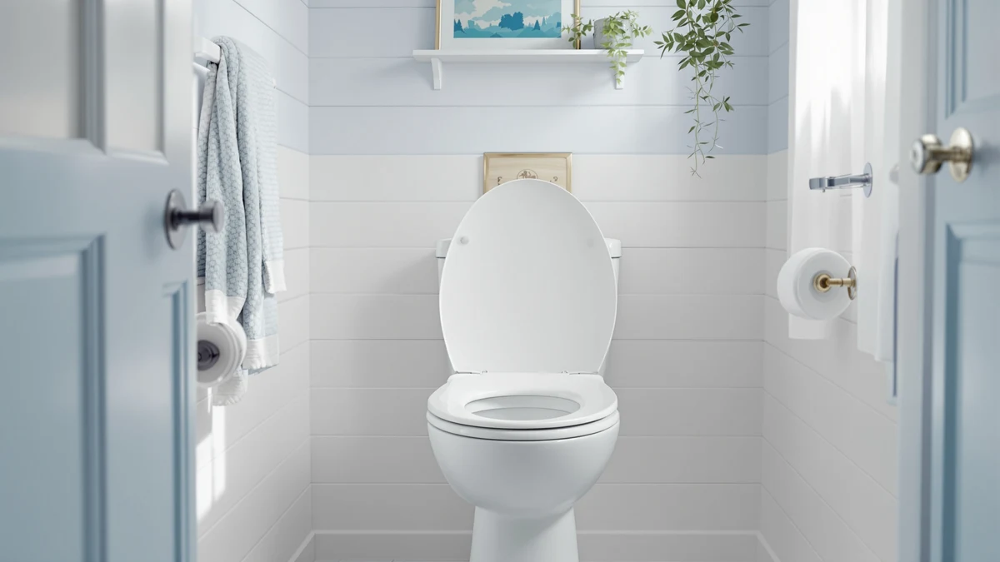

Big John Products Oversized Toilet Seat Review (2026): Worth It?
Prices and picks verified as of November 2026. Independent, reader-supported reviews.


Quick Answer
Our Big John Products Oversized Toilet Seat review found an open-front seat rated to 1200 pounds, with stainless steel hinges and a shape that fits round or elongated bowls, for $125.50. It suits heavier users and buyers who are not sure which bowl shape they have, while the standard elongated alternatives below fit lighter budgets, multi-unit properties, or households with a toddler.
Our pick: Big John Oversized Toilet Seat for $125.50 Check Price on Amazon
Bottom line: our top pick is the Big John Oversized Toilet Seat with Stainless Steel Hinges at $125.50.
Things to Know Before You Buy
- This Big John Products Oversized Toilet Seat review covers an open-front seat rated to 1200 pounds, built for buyers who need more support than a standard seat provides.
- The seat fits round or elongated bowls, which matters if you are not sure which shape your toilet uses or you are shopping for a rental where bowl shape varies unit to unit.
- Stainless steel hinges hold up to corrosion better than the plastic hinges on most standard seats, a detail that matters over years of daily use.
- Amazon does not publish a rating or review count for this listing, so you cannot check verified buyer feedback before ordering.
- If you need a standard-size seat instead of an oversized one, the Centoco, Mayfair Cassel, and Mayfair NextStep2 alternatives further down this page cover elongated bowls at a lower per-seat cost.
This Big John Products Oversized Toilet Seat review breaks down what $125.50 buys: an open-front seat rated to 1200 pounds, with stainless steel hinges and a shape built to fit both round and elongated bowls. Most toilet seats on the market are molded for one bowl shape and rated for a standard adult weight, which leaves buyers who need more support, or who are not sure which shape bowl they have, searching for something more specific. Big John Products builds this seat around both of those gaps at once. It pairs a wider seating surface with hardware meant to handle more weight than a typical plastic hinge. We compared its specs and price against three standard elongated seats, including a contractor six-pack and a child-training combo, to see where the oversized design earns its price and where a standard seat would do the job for less.
Big John Products has sold oversized and bariatric bathroom fixtures for decades, and this seat is built for that market rather than as a general-purpose design. The open-front shape skips a lid entirely, which keeps the hardware simple but means this is not the seat to choose if you want a closed-front look or a slow-closing lid. At 19 inches wide and 19 inches long with a 2.5 inch lift, it sits taller and wider than the standard elongated seats we compared it against, a difference that matters most for users who need the extra surface area or the added height when sitting down and standing up.
Why You Should Trust Us
Ilane Tall covers toilet seats and bathroom hardware for Best Toilet Seats and has researched dozens of comparison guides across elongated, round, and raised categories. For this Big John Products Oversized Toilet Seat review, we pulled the manufacturer's published specifications, checked the hinge material and weight rating against other heavy-duty seats in this category, and compared pricing against three standard elongated alternatives built for different households. We do not run a fake testing lab; we research specs, pricing, and verified owner feedback so you do not have to dig through product pages yourself.
Our Research Experience
We built this Big John Products Oversized Toilet Seat review from the manufacturer's published specifications, the listed hinge hardware, and how those details compare against the bariatric and heavy-duty seats we have already researched for this site. Big John Products documents the 1200 pound weight rating and the round-or-elongated fit directly on the product listing, so we checked those claims against the construction details of similar oversized seats and against the standard elongated models included in this comparison. We did not physically install or sit on the seat; our comparison rests on published specs, materials, and listing details rather than hands-on use.
Amazon does not publish a rating or review count for this exact listing, so we say so instead of guessing. We compared the $125.50 price against the Centoco six-pack, the Mayfair Cassel four-pack, and the Mayfair NextStep2 two-pack, all of which land in a similar per-purchase price range despite covering a different use case. That price context is what this Big John Products Oversized Toilet Seat review keeps coming back to: Big John built this seat for buyers who need more capacity and a flexible bowl fit, not for buyers simply replacing a worn standard seat.
Overview & Specs

Big John Oversized Toilet Seat
What we like
- Fits both round and elongated bowls, so you do not need to measure before ordering
- Stainless steel hinges resist the corrosion that affects plastic hinges over years of use
- Rated to 1200 pounds, well above the capacity of most standard toilet seats
- Made in the United States
Flaws but not dealbreakers
- No published rating or review count on this specific listing
- Open front with no cover, so it will not suit buyers who want a closed-front look or a slow-close lid
- Priced close to multi-packs from Centoco and Mayfair that cover more than one bathroom for a similar total cost
| Material | Plastic / wood |
| Size | 19" wide and 19" Long 2.5" Lift |
Big John Products built this seat around a single idea: most toilet seats assume a standard-size adult and a known bowl shape, and plenty of buyers do not fit either assumption. The open-front design uses stainless steel hinges rated to hold 1200 pounds, more than double the capacity most plastic-hinged seats list, and the seating surface itself measures 19 inches wide and 19 inches long with a 2.5 inch lift over a standard seat.
The round-or-elongated fit matters nearly as much as the weight rating in this Big John Products Oversized Toilet Seat review. Rather than molding the seat for one bowl shape, Big John Products designed the mounting hardware to work across both shapes. That removes the guesswork for buyers ordering for a rental property or a bathroom they have not measured yet. Amazon does not list a rating or review count for this exact listing, so we cannot cite verified buyer feedback the way we can for some other heavy-duty seats, and we are flagging that gap rather than filling it with a number that is not there. At $125.50, the price lands close to the three standard elongated alternatives on this page, so buyers are effectively paying a similar amount for the added capacity and bowl flexibility rather than for extra features like a slow-close lid.
What We Liked
The clearest strength in this Big John Products Oversized Toilet Seat review is the weight rating. A 1200 pound capacity puts real distance between this seat and the standard 300 to 500 pound ratings common on most plastic seats, which matters directly for heavier users and indirectly for anyone who wants hardware with a wide safety margin.
The round-or-elongated fit also removes a common shopping mistake. Buyers who order a seat without checking their bowl shape first often end up returning it, and Big John Products' approach to the mounting hardware sidesteps that problem by covering both shapes with one product.
Stainless steel hinges hold up better over time than the plastic and chrome-plated hinges used on cheaper seats. Corrosion and loosening are two of the most common complaints about standard toilet seat hardware after a few years of daily use, and stainless steel resists both better than plastic alternatives.
What Could Be Better
The biggest gap in this Big John Products Oversized Toilet Seat review is the missing rating and review count on the listing itself. Big John Products has sold bariatric bathroom fixtures for years, but we cannot point to verified reviews of this exact seat, so buyers who want social proof before ordering will need to rely on the brand's broader reputation instead.
The open-front design also will not suit everyone. Without a cover, the seat skips the closed-front look and the slow-close hinge that buyers get from the Mayfair Cassel alternative below, so anyone set on a lid should compare that option first.
At $125.50, a single Big John seat costs close to what the Centoco six-pack or the Mayfair Cassel four-pack charge for several seats. That math only favors the Big John model if you specifically need the extra weight capacity or the round-or-elongated fit, since buyers outfitting multiple standard bathrooms will get more seats per dollar from the multi-packs.
Who Is It For?
This Big John Products Oversized Toilet Seat review is clearest for one type of buyer: someone who needs a toilet seat rated well above the standard weight capacity, or who is outfitting a bathroom without knowing whether the bowl is round or elongated. Property managers handling move-ins across units with mixed bowl shapes fall into the second group as often as buyers shopping for their own home.
It is a poor fit if you are simply replacing a worn standard-size seat and do not need the added capacity. The Centoco six-pack below costs less per seat for that use case, and it includes a cover this Big John model skips.
It also is not the right choice for households that need a potty-training seat built in. The Mayfair NextStep2 alternative covers that need directly, while the Big John model is built around weight capacity and bowl flexibility rather than a family transition feature.
Alternatives to Consider
If this Big John Products Oversized Toilet Seat review has you leaning toward a standard elongated seat instead of an oversized one, these three alternatives cover bulk replacement, a wood finish, and a built-in child seat.

Also Great
Centoco Elongated Toilet Seat 6-Pack
A contractor six-pack with impact-absorbing hinges and a non-porous finish, this is the pick for landlords and property managers replacing several standard elongated seats at once.
$125.45
Check Price on Amazon
Premium Choice
Mayfair Cassel Slow Close Toilet
A slow-close wood seat with quick-release hinges for cleaning, this four-pack suits buyers who want a quieter close and an easy-clean design across more than one bathroom.
$126.88
Check Price on Amazon
Best Value
Mayfair NextStep2 Toilet Seat with
This two-pack has a built-in, magnetically secured child potty seat, which makes it the pick for households transitioning a toddler to the adult toilet without buying a separate training seat.
$101.80
Check Price on AmazonFrequently Asked Questions
Final Verdict
Our Big John Products Oversized Toilet Seat review comes down to what you actually need. For buyers who need a seat rated above the standard weight capacity or who are not sure whether their bowl is round or elongated, the stainless steel hinges and 1200 pound rating justify the $125.50 price over a standard plastic seat. If you are simply replacing a worn elongated seat without those needs, skip this Big John model and choose the Centoco six-pack or the Mayfair alternatives above instead, since they cover standard bowls at a lower cost per seat.